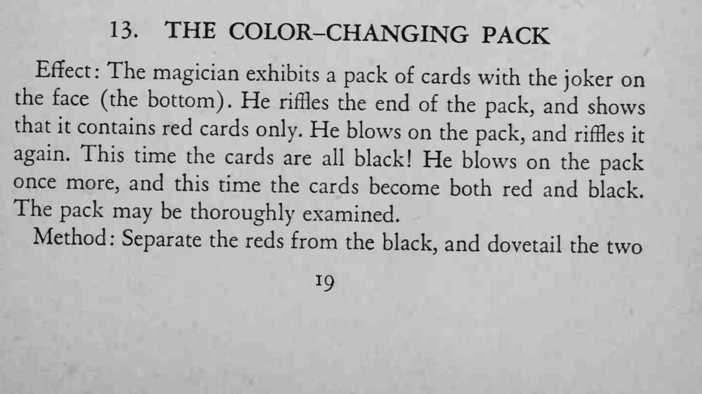
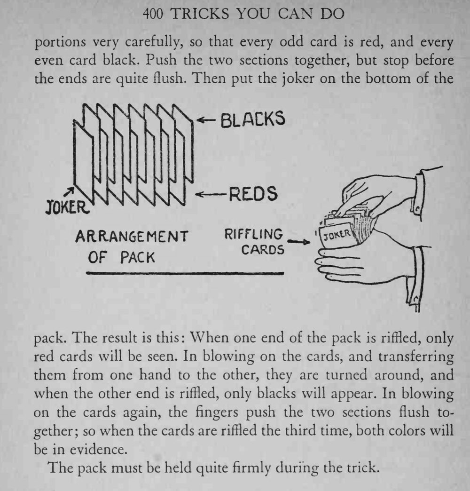

整副牌先全是红的，魔术师吹一口气、再弹一遍就变成全黑；再吹一口气，红黑两色同时出现，最后整副牌还能交给观众检查。
整个过程牌要握紧，两叠牌一旦散开，交替的花色就露馅了。


Effect The magician exhibits a pack of cards with the joker on the face (the bottom). He riffles the end of the pack, and shows that it contains red cards only. He blows on the pack, and riffles it again. This time the cards are all black! He blows on the pack once more, and this time the cards become both red and black. The pack may be thoroughly examined. Method: Separate the reds from the black, and dovetail the two portions very carefully, so that every odd card is red, and every even card black. Push the two sections together, but stop before the ends are quite flush. Then put the joker on the bottom of the nM kNsKNKN \l joker; pack. The result is this When one end of the pack is riffled, only red cards will be seen. In blowing on the cards, and transferring them from one hand to the other, they are turned around, and when the other end is riffled, only blacks will appear. In blowing on the cards again, the fingers push the two sections flush together; so when the cards are riffled the third time, both colors will be in evidence. The pack must be held quite firmly during the trick.